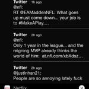
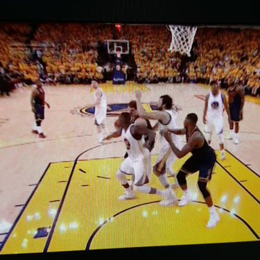
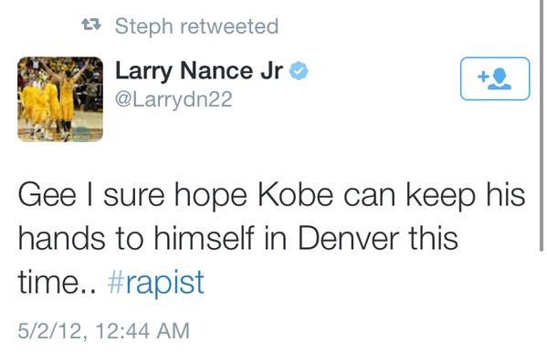
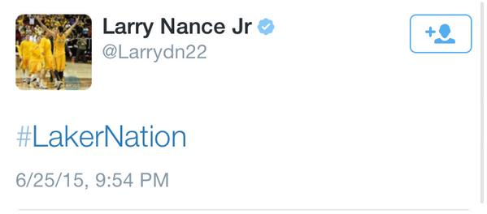
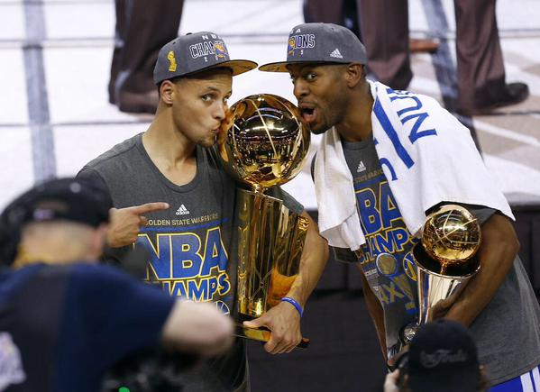
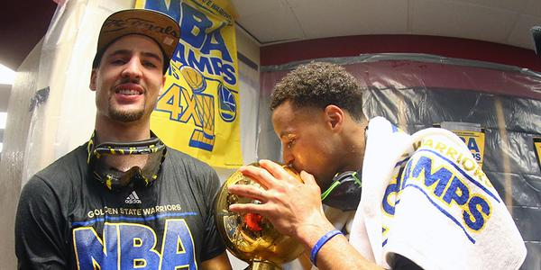
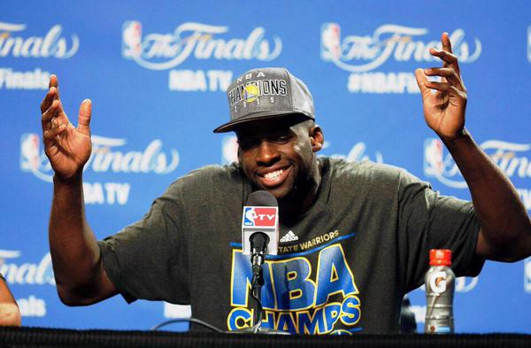
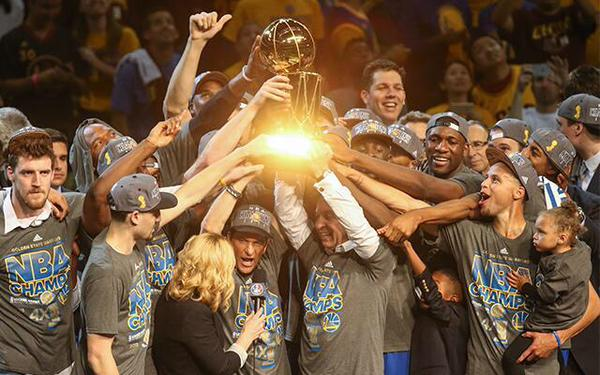

Samuel EscapaView profile


Tweets
- Tweets
- Tweets & replies
- Photos & videos
@k_huo is blocked
Are you sure you want to view these Tweets? Viewing Tweets won't unblock @k_huo.
Kevin Huo followed
-
-
tonights tweets brought to you by black label and soju
0 retweets 3 favorites -
-
-
Kevin Huo retweeted
-
this is unbelievably amazing https://www.youtube.com/watch?t=13&v=4MhD3YfnAsU …
@justinhan21 -
Kevin Huo retweeted
-
-
wish
@Dlee042 the best in Boston. will always appreciate what you did for the franchise0 retweets 5 favorites -
why would you put darude sandstorm in a study mix
1 retweet 5 favorites -
-
Kevin Huo retweeted
-
-
Kevin Huo retweeted
THIS JUST IN: Draymond Green and Warriors agree to five-year contract worth $85 million.(via
@YahooSports) pic.twitter.com/9KzzWNb6JO5:03 AM - 2 Jul 2015 · Details -
-
Kevin Huo retweeted
This
#FathersDay, join us in thanking all the dads out there who help us#DreamBig. https://amp.twimg.com/v/c4ea1496-2fde-4384-84b2-5856d4d8f55f …4,425 retweets 4,437 favorites
-
-
Kevin Huo followed Niggas Playing Games, Trill Withers, mike chan and LOONEY
-
Kevin Huo retweeted
Kobe is literally going to murder him. RT
@RachaelHoops: worst one so far pic.twitter.com/gHRfjN2z4q"5:09 AM - 26 Jun 2015 · Details -
Kevin Huo retweeted
Warriors fans watching the draft: pic.twitter.com/PbqnvyAiKm
2:36 AM - 26 Jun 2015 · Details -
-
Kevin Huo retweeted
Crying. RT
@FunniestTrends: Police: "Who did it" Me: "I ain't snitching fam" Police: "You're facing 25 to life" pic.twitter.com/l7IR8pcYT8Play
-
-
-
Kevin Huo retweeted
This is probably mean. We’re sorry. http://www.sbnation.com/soccer/2015/6/23/8836659/manon-melis-miss-netherlands-japan-2015-womens-world-cup … https://vine.co/v/e5rdDr0xHl5
273 retweets 250 favorites
-
-
Kevin Huo retweeted
Happy 1-Week Anniversary. pic.twitter.com/beLlcORpqO
2:59 AM - 24 Jun 2015 · Details
 WORLD STAR FANS
WORLD STAR FANS

@k_huo hasn't tweeted yet.
Loading seems to be taking a while.
Twitter may be over capacity or experiencing a momentary hiccup. Try again or visit Twitter Status for more information.
Flag this media
This has already been marked as containing sensitive content.
Who to follow
· · View all-
50 Cent
Rapper 50 Cent Files for Bankruptcy93.8K Tweets about this trend
-
#MondayMotivation
5 things to do every Monday morning to ensure a successful week at...69.8K Tweets about this trend
-
Naughty Boy
Zayn Malik Torches 'Fat Joke' Naughty Boy on Twitter241K Tweets about this trend
-
#WeLoveRubyRoseOnShots
123K Tweets about this trend
-
#2YearsWithoutCory
Lea Michele Posts Touching Tribute to Cory Monteith on 2-Year...197K Tweets about this trend
-
Satoru Iwata
NINTENDO CO LTD ADR (NTDOY) - Nintendo's Reggie Fils-Aime On Satoru...570K Tweets about this trend
-
#NewHorizons
Pluto’s Biggest Moon Has a Personality of Its OwnJust started trending
-
#MySpouseThinks
Just started trending
-
Scott Walker
America's Top Union Leader Just Destroyed Scott Walker in Six Words51.4K Tweets about this trend
-
Harrison Ford
Harrison Ford at Comic-Con -- Trust Me Guys ... I Can Still Fly the...18.5K Tweets about this trend